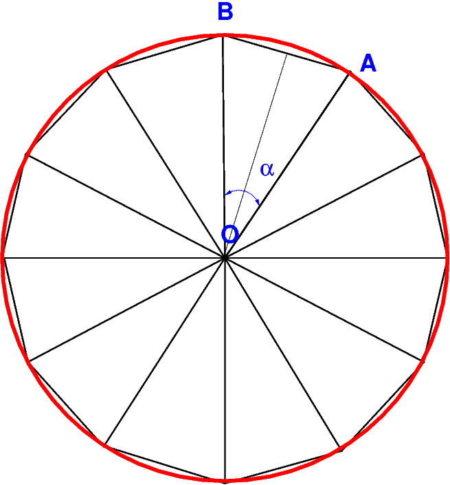

11.8. Exercices#
%matplotlib inline
import numpy as np
from IPython.display import HTML,display
11.8.1. Exercice: calcul de \(\pi\)#
calcul de \(\pi\) en tant que limite de la surface d’un polygonne inscrit dans un cercle de rayon 1.
{kind=link}
Soit \(a_n\) l’aire du triangle \(OAB\) avec \(\alpha = 2\pi/n\)
\[ a_n = \cos\frac{\alpha}{2}\sin\frac{\alpha}{2} \]
l’aire \(A_n\) du polygone inscrit à n cotés :
\[ A_n = n a_n = \frac{n}{2}\sin\frac{2\pi}{n}\]
et on a
\[\lim _{n\rightarrow\infty} A_n = \pi \]
Pour calculer \(A_{2n}\),on exprime \(s_{2n}=\sin\frac{2\pi}{2n}\) en fonction de \(s_n=\sin\frac{2\pi}{n}\) en utilisant l’identité \((\sin a)^2 = \frac{ 1- cos(2a)}{2}\)
\[ A_{2n} = \frac{n}{2} s_{2n} \mbox{ avec } s_{2n} = \sqrt{\frac{1-\sqrt{1-(s_n)^2}}{2}} \]
11.8.1.1. Algorithme de base: calcul de la limite de An#
n=4
s=1.0 # sin(2pi/n)
tant que s>eps faire
s = sqrt((1 - sqrt(1-s*s))/2)
n = 2*n
A = (n/2) * s
Avec cette algorithme implémenter sur un ordinateur avec des réels en double précision la suite \(A_n\) converve tout d’abord vers \(\pi\) puis tends vers 0 !!
# calcul de la suite An (version de base)
n = 4
s = 1.0
eps = 1.0e-14
while s > eps :
s = np.sqrt((1.-np.sqrt(1.-s*s))/2.)
n = 2*n
A = (n/2) *s
print("n=%10d"%n," An=%15.10f"%A," err=%15g"%(A-np.pi))
n= 8 An= 2.8284271247 err= -0.313166
n= 16 An= 3.0614674589 err= -0.0801252
n= 32 An= 3.1214451523 err= -0.0201475
n= 64 An= 3.1365484905 err= -0.00504416
n= 128 An= 3.1403311570 err= -0.0012615
n= 256 An= 3.1412772509 err= -0.000315403
n= 512 An= 3.1415138011 err= -7.88524e-05
n= 1024 An= 3.1415729404 err= -1.97132e-05
n= 2048 An= 3.1415877253 err= -4.92831e-06
n= 4096 An= 3.1415914215 err= -1.23209e-06
n= 8192 An= 3.1415923456 err= -3.07979e-07
n= 16384 An= 3.1415925765 err= -7.70448e-08
n= 32768 An= 3.1415926335 err= -2.01265e-08
n= 65536 An= 3.1415926548 err= 1.2178e-09
n= 131072 An= 3.1415926453 err= -8.26858e-09
n= 262144 An= 3.1415926074 err= -4.62141e-08
n= 524288 An= 3.1415929109 err= 2.5735e-07
n= 1048576 An= 3.1415941252 err= 1.47161e-06
n= 2097152 An= 3.1415965537 err= 3.90012e-06
n= 4194304 An= 3.1415965537 err= 3.90012e-06
n= 8388608 An= 3.1416742650 err= 8.16114e-05
n= 16777216 An= 3.1418296819 err= 0.000237028
n= 33554432 An= 3.1424512725 err= 0.000858619
n= 67108864 An= 3.1424512725 err= 0.000858619
n= 134217728 An= 3.1622776602 err= 0.020685
n= 268435456 An= 3.1622776602 err= 0.020685
n= 536870912 An= 3.4641016151 err= 0.322509
n=1073741824 An= 4.0000000000 err= 0.858407
n=2147483648 An= 0.0000000000 err= -3.14159
11.8.1.2. amélioration de la précision#
Le problème vient du calcul de \(1-\sqrt{1-s^2}\) qui pour \(s\ll 1\) est peu précis ! En utilisant la formule équivalente suivante, on améliore a précision:
\[ 1-\sqrt{1-s^2} = \frac{s}{1 + \sqrt{1-s^2}}\]
# calcul de la suite An (version précise)
n = 4
s = 1.0
eps = 1.0e-14
while s > eps :
s = s / np.sqrt(2*(1.+ np.sqrt(1.-s*s)))
n = 2*n
A = (n/2) *s
print("n=%16d"%n," An=%20.18f"%A," err=%15g"%(A-np.pi))
n= 8 An=2.828427124746189847 err= -0.313166
n= 16 An=3.061467458920717810 err= -0.0801252
n= 32 An=3.121445152258051969 err= -0.0201475
n= 64 An=3.136548490545938872 err= -0.00504416
n= 128 An=3.140331156954752512 err= -0.0012615
n= 256 An=3.141277250932772436 err= -0.000315403
n= 512 An=3.141513801144300899 err= -7.88524e-05
n= 1024 An=3.141572940367091338 err= -1.97132e-05
n= 2048 An=3.141587725277159571 err= -4.92831e-06
n= 4096 An=3.141591421511199744 err= -1.23208e-06
n= 8192 An=3.141592345570117573 err= -3.0802e-07
n= 16384 An=3.141592576584872454 err= -7.70049e-08
n= 32768 An=3.141592634338563172 err= -1.92512e-08
n= 65536 An=3.141592648776985630 err= -4.81281e-09
n= 131072 An=3.141592652386591134 err= -1.2032e-09
n= 262144 An=3.141592653288992842 err= -3.008e-10
n= 524288 An=3.141592653514593270 err= -7.51998e-11
n= 1048576 An=3.141592653570993487 err= -1.87996e-11
n= 2097152 An=3.141592653585093764 err= -4.69935e-12
n= 4194304 An=3.141592653588618944 err= -1.17417e-12
n= 8388608 An=3.141592653589500461 err= -2.92655e-13
n= 16777216 An=3.141592653589720729 err= -7.23865e-14
n= 33554432 An=3.141592653589775797 err= -1.73195e-14
n= 67108864 An=3.141592653589789563 err= -3.55271e-15
n= 134217728 An=3.141592653589793116 err= 0
n= 268435456 An=3.141592653589794004 err= 8.88178e-16
n= 536870912 An=3.141592653589794448 err= 1.33227e-15
n= 1073741824 An=3.141592653589794448 err= 1.33227e-15
n= 2147483648 An=3.141592653589794448 err= 1.33227e-15
n= 4294967296 An=3.141592653589794448 err= 1.33227e-15
n= 8589934592 An=3.141592653589794448 err= 1.33227e-15
n= 17179869184 An=3.141592653589794448 err= 1.33227e-15
n= 34359738368 An=3.141592653589794448 err= 1.33227e-15
n= 68719476736 An=3.141592653589794448 err= 1.33227e-15
n= 137438953472 An=3.141592653589794448 err= 1.33227e-15
n= 274877906944 An=3.141592653589794448 err= 1.33227e-15
n= 549755813888 An=3.141592653589794448 err= 1.33227e-15
n= 1099511627776 An=3.141592653589794448 err= 1.33227e-15
n= 2199023255552 An=3.141592653589794448 err= 1.33227e-15
n= 4398046511104 An=3.141592653589794448 err= 1.33227e-15
n= 8796093022208 An=3.141592653589794448 err= 1.33227e-15
n= 17592186044416 An=3.141592653589794448 err= 1.33227e-15
n= 35184372088832 An=3.141592653589794448 err= 1.33227e-15
n= 70368744177664 An=3.141592653589794448 err= 1.33227e-15
n= 140737488355328 An=3.141592653589794448 err= 1.33227e-15
n= 281474976710656 An=3.141592653589794448 err= 1.33227e-15
n= 562949953421312 An=3.141592653589794448 err= 1.33227e-15
n=1125899906842624 An=3.141592653589794448 err= 1.33227e-15